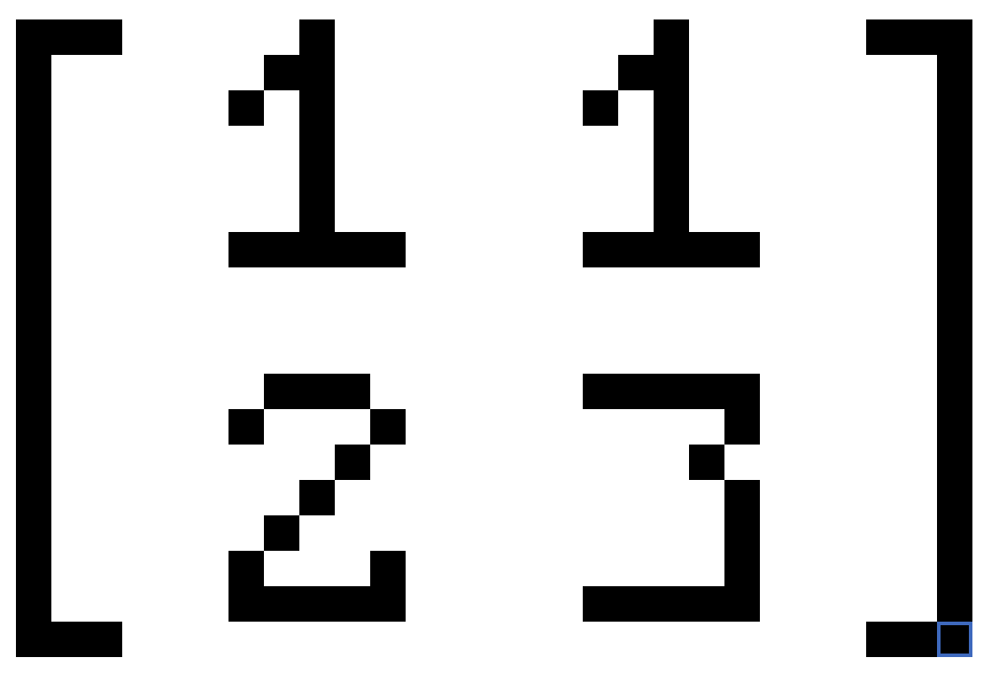

Hello! If you have not taken Algebra 2 (or forgot about matrices), you may be wondering- "Eli, what the FLIP does any of this mean?" Worry not, that this is a simple(I hope) guide or introduction to all you need to know about Matrices in order to understand their use in cryptography!!
Things to know:
- What are Matrices used for?
- How do Matrix dimensions work?
- How are matrices multiplied?
- How to solve for the determinant and inverse matrix
- How to put it all together?
1. What are matrices used for?
Matrices are a grid of numers and symbols that are set up in rows or columns. Typically, they can be used to arrange sets of data. In math, they are used to solve systems of equation,
arrange data, or geometric transformations.
2. How do Matrix diemsions work?
matrices come in all sizes! Their dimensions are determined after their number of rows x columns
3. How to multiply matrices?
Multiplying matrices is not the most intuitive thing, but here is a little graphic! (credits to charchithowitzer)
 Keep in mind that in order to multiply matrices, the columns of matrix A must equal the number of. rows of matrix B
Then, the dimensions of your new matrix will be equal to the rows of matrix A by the columns of Matrix B.
If I have a 3x2 matrix and a 2x2 matrix, my resulting matrix will have a dimension of 3x2
Basically, you first multiply row one of your first matrix by column one of your second matrix.
Add them all up to get your first value of your resulting Matrix.
Keep this pattern up until your resulting matrix is completely filled according to the dimensions.
4. How to find the determinant and inverse matrix?
Keep in mind that in order to multiply matrices, the columns of matrix A must equal the number of. rows of matrix B
Then, the dimensions of your new matrix will be equal to the rows of matrix A by the columns of Matrix B.
If I have a 3x2 matrix and a 2x2 matrix, my resulting matrix will have a dimension of 3x2
Basically, you first multiply row one of your first matrix by column one of your second matrix.
Add them all up to get your first value of your resulting Matrix.
Keep this pattern up until your resulting matrix is completely filled according to the dimensions.
4. How to find the determinant and inverse matrix?
Lets say I am given the following matrix:

In order to find the determinant, I will take value a times value d and subtract value b times value c (ad-bc)
Therefore, your determinant will be (1)(3) - (2)(1) = 1
Now, to get your inverse Matrix, you will use 1/(determinant). Since our determinant for our specific matrix is equal to one, 1/1 is also just one.
We then multiply this value by a modified version of our matrix. We willswitch values a and d and then negate values b and c this way: